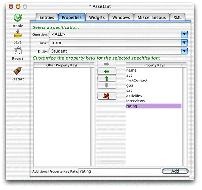
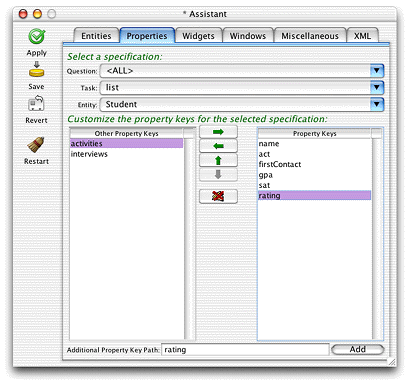
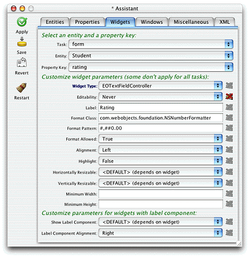
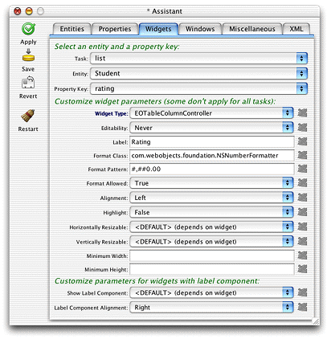

Prepare
Application for Business Logic
The business logic you'll add is quite simple: It calculates
a rating for a student by aggregating the three scores in the database:
ACT, SAT, and GPA. You can use Assistant to prepare the application
for this new business logic.
Here's how:
- Build and
run the application and open Assistant. You have to build the application again
since you changed the model.
- In the Properties pane, add a new property key path called
"rating" for Task=form, Entity=Student using the Additional
Property Key Path text field and the Add button as shown in Figure 5-12.
Figure
5-12 Add a property key for the form task

- Since you'd like to see the rating displayed in the list
view of a query window, you also need to add the additional property
for the list task. Switch Task to list and click Add, as shown in Figure 5-13.
Figure
5-13 Additional property key for list
task

- The new property will be associated (via an EOAssociation,
see "Associations") with a method
of the same name in a client-side business logic class for the entity (
businesslogic.client.Student in
this case). To make this association, switch to the Widgets pane
and select Task=form, Entity=Student, Property Key=rating. From
the Widget Type pop-up menu, select EOTextFieldController if it
is not already selected. Doing this binds the association aspect
of the EOTextFieldController widget (rating) with the rating method,
which you'll define in a few steps.
Figure
5-14 Change the widget type to make the
association.

- Since the rating is calculated on the server side, the text
field should be marked as not editable by the user. So, while in
the Widgets pane, select Never in the Editability pop-up menu.
- Finally, you should apply a number formatter to the widget
so the number displayed is more meaningful. Change the Format Class
field to read "com.webobjects.foundation.NSNumberFormatter".
Formatters need a pattern, and since the rating is a decimal number,
the Format Pattern field should be "#,##0.00" as shown in Figure 5-14. See
the class reference documentation for NSNumberFormatter for more
information on format patterns.
- Since the rating also appears as a column in list views, switch
the task to list and set the format options for the EOTableColumnController
as shown in Figure 5-15.
Figure 5-15 Change
formatter for property in list view

- Save changes and quit the client and server applications.
© 2002 Apple Computer, Inc. (Last Updated May 1, 2002)